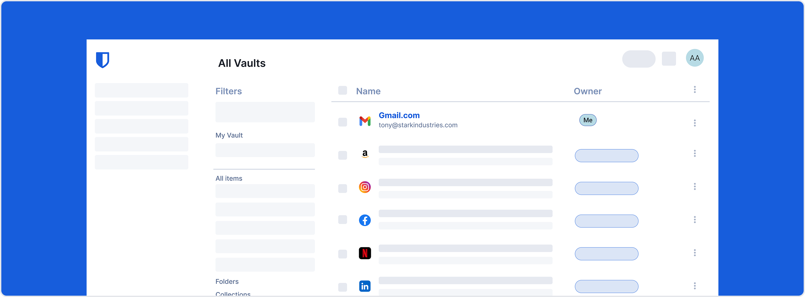

<bit-dialog dialogSize="large" class="tw-p-0">
  <div bitDialogContent class="tw-p-2 tw-pb-0">
    
    <div class="tw-px-12 tw-pt-6 tw-text-center">
      <div class="tw-px-12">
        <h2 bitTypography="h2" class="tw-mb-4">
          {{ "vaultWelcomeDialogTitle" | i18n }}
        </h2>
        <p bitTypography="body1" class="tw-mb-0 tw-text-muted">
          {{ "vaultWelcomeDialogDescription" | i18n }}
        </p>
      </div>
    </div>
  </div>
  <div bitDialogFooter class="tw-w-full tw-flex tw-justify-center tw-gap-4 tw-pb-3">
    <button bitButton buttonType="secondary" type="button" (click)="onDismiss()">
      {{ "vaultWelcomeDialogDismissCta" | i18n }}
    </button>
    <button bitButton buttonType="primary" type="button" (click)="onPrimaryCta()">
      {{ "vaultWelcomeDialogPrimaryCta" | i18n }}
    </button>
  </div>
</bit-dialog>
